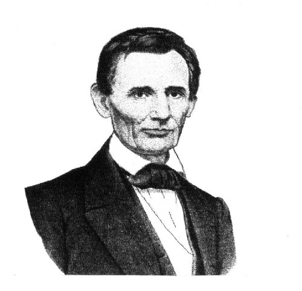

蓋茨堡演說（Gettysburg Address）的來龍去脈
南北戰爭是美國史上最慘烈的一役，雙方死亡高達六十一萬餘。蓋茨堡戰役於1863年7月在賓夕法尼亞小鎮的街上及其周圍地區展開，持續了三天之久。此次戰役是南北戰爭的轉捩點。為北軍奠定了勝利的基礎。國會決定把這一片曾有許多英勇戰士犧牲生命的戰場建為國家公墓。林肯總統接受David Wills的邀請，親自於1863年11月19從華盛頓前來為此墓地舉行揭幕典禮。揭幕時，他發表演說，哀悼長達5個半月的蓋茨堡戰役陣亡的將士。期望美國在上帝的庇佑之下，得到重新獲得自由，成為民有、民治、民享的政府永不在地球上消滅。
蓋茲堡演說全文 1863年11月19日 林肯演講（江銘輝譯）

圖：林肯（Abraham Lincoln，西元1809～1865年）1861年當選美國總統，1865年遭暗殺於任。
87年前，我們的祖先在這個大陸上創立了一個新國家，生長在自由之中，信仰人生平等的原則。
現在我們正從事一場偉大的內戰，考驗這個國家，或任何一個有自由和平等信仰的國家是否會長久生存下去？今日大家聚集在這場偉大戰爭的戰場上。我們來到這裡是為使這個戰場能有部分的土地獻給那些為國家生存而犧牲的烈士們，作為他們最後安息的場所。我們這樣做完全是正確且適當的。
但是廣義說，在這塊土地上，我們無法去奉獻，也無法神聖化。因為那些曾在這裡戰鬥過的勇士們（無論活著的和去世的）都已經將它聖化了，他們的貢獻遠超過我們微薄的力量，不是我們能夠增減的。
我們今天在這裡所說的，也許全世界不會太注意，也不會被永遠記住，但烈士們在這裡所做的一切，將永遠不會被忘記。我寧可說，我們這些還活著的人應該在這裡繼續奉獻完成戰場上先烈們所推動未完成的崇高任務。在此，我們應該把自己獻給擺在眼前的偉大任務--要從這些光榮的死者身上汲取更多的奉獻精神，徹底完成他們已經犧牲之事業--我們在此下定最大的決心，不讓這些烈士白白犧牲；我們要使這個國家在上帝的庇佑下重新得到自由，使這個民有、民治、民享的政府永不在地球上消滅。
Gettysburg Address
Four score and seven years ago our fathers brought forth on this continent, a new nation, conceived in Liberty, and dedicated to the proposition that all men are created equal.
Now we are engaged in a great civil war, testing whether that nation, or any nation so conceived and so dedicated, can long endure. We are met on a great battle-field of that war. We have come to dedicate a portion of that field, as a final resting place for those who here gave their lives that that nation might live. It is altogether fitting and proper that we should do this.
But, in a larger sense, we can not dedicate -- we can not consecrate -- we can not hallow -- this ground. The brave men, living and dead, who struggled here, have consecrated it, far above our poor power to add or detract. The world will little note, nor long remember what we say here, but it can never forget what they did here. It is for us the living, rather, to be dedicated here to the unfinished work which they who fought here have thus far so nobly advanced. It is rather for us to be here dedicated to the great task remaining before us -- that from these honored dead we take increased devotion to that cause for which they gave the last full measure of devotion -- that we here highly resolve that these dead shall not have died in vain -- that this nation, under God, shall have a new birth of freedom -- and that government of the people, by the people, for the people, shall not perish from the earth.